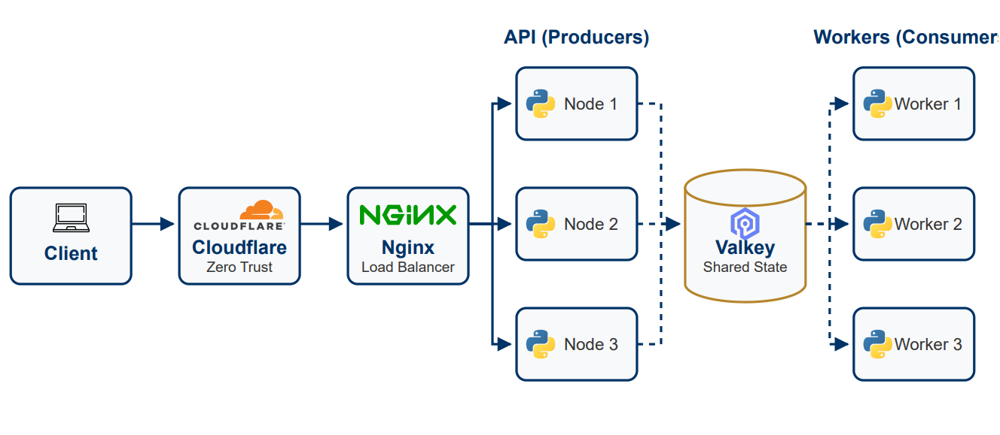
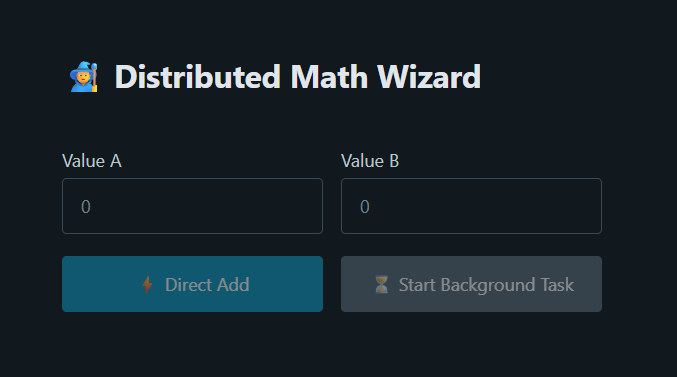
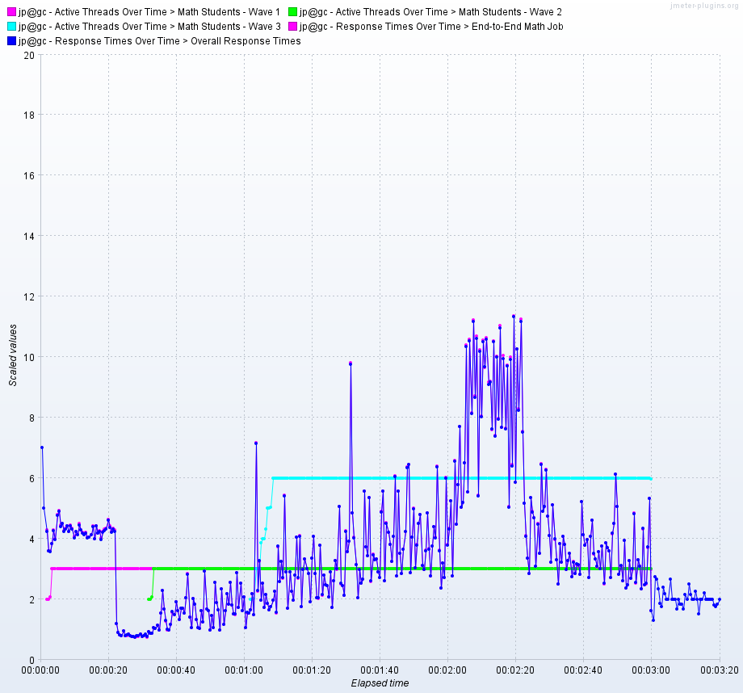

A distributed system simulation comparing synchronous vs. asynchronous architectures. Demonstrates how a non-blocking, producer-consumer model using Valkey and multiprocessing maintains user responsiveness under heavy load, unlike traditional blocking APIs.
Synchronous API calls block the server until completion, leading to poor user experience and timeouts during high demand or long-running tasks.

The system uses a decoupled architecture. The API accepts tasks, pushes them to a Valkey queue, and returns immediately. Background workers process tasks from the queue, updating the shared state. Secure access is provided via Cloudflare Zero Trust.


A 3-stage "staircase" load test revealed the system's inflection point. Even when the 3-worker cluster was saturated with 12 concurrent math tasks (purple spikes), the response time for casual users remained low and stable (blue line), proving architectural resilience.
The asynchronous, distributed approach successfully decouples long-running computations from the user interface, ensuring a responsive experience. Future extensions include implementing rate limiting, a dead letter queue for failed tasks, and migration to Kubernetes for enhanced scalability.